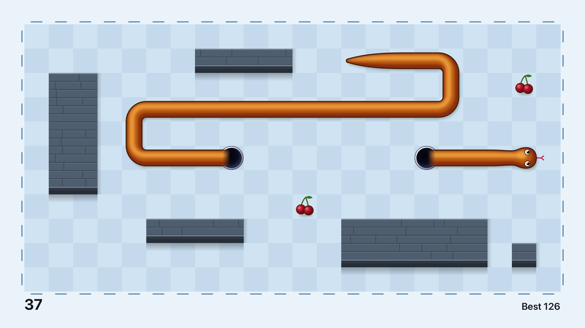

Snake
One snake, one open field, one endless round.
How to play
| Up, Down, Left, Right | Turn the snake. |
| Play/Pause or Back (Menu on older remotes) | Pause. |
| Cherry | 1 point and a longer tail. |
| Star | 10 points. The tail does not grow. |
| Shield | Armor for 30 seconds. It breaks every wall in your way. |
| Ghost | The snake goes through walls for 15 seconds. Get out of the walls before the time is up. |
Questions
Where are my results? The first screen has the leaderboard. Without Game Center it shows your own best rounds.
How do I see other players? Sign in to Game Center in the Settings of your device, then open the game again.
Does the game need the internet? No. The game works offline.
Support
Write to xepozz@icloud.com.